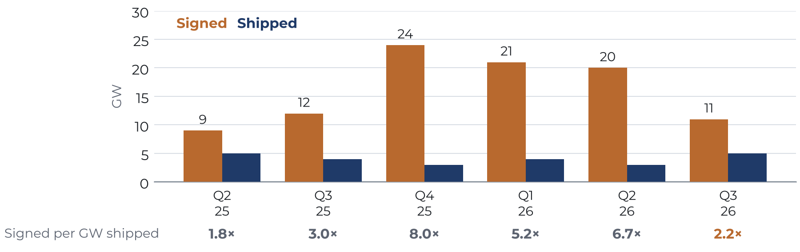

Slot Machine
Gas turbine reservations, a paper shortage, and who holds the risk

Key implications
On 28 October, GE Vernova reported 122 gigawatts (GW) of gas turbines on firm order or reserved, up from 50 GW in March 2025. In times past, an order book of that size would have meant a wave of power plants: turbines ordered, permits filed, and steel rising within two or three years. Yet the field is lagging the factory. Planned US gas capacity has risen 3.5 times in two years, while the share under construction fell from 26% to 18%. KPA analysis of EIA's own lists shows why the gap matters. Gas listed a year ahead has almost always been built; of gas listed two years ahead, 39–62% was canceled or postponed. Most of today's 64 GW is two or more years out, and half of what EIA lists as not yet seeking approval would serve data center campuses. The question is no longer only whether turbines can be found, but who pays for the slots that outlive their plants.
- For new gas plants, a second queue has formed at the factory. GE's 122 GW is about six years of its output; At GE's planned output, the book equals production through about mid-2031, and GE has already sold slots for 2032. Siemens Energy holds a further 69 GW, against the 15–16 GW it said it could deliver in its 2026 fiscal year.
- The shortage is real at the factory but partly paper in the field. EIA lists 37.4 GW of 2027–30 gas as not yet seeking approval, yet KPA's plant-by-plant check finds 41% of it approved or under construction. Much of the rest is a few large data center campuses. One, Project Matador in Texas, is 11.3 GW, about 18% of all US gas planned for 2027–30.
- Buyers carry risk from the first deposit. Reservations take deposits of 20–25% that GE calls non-refundable, and data centers hold about a third of them. Converting a reservation into an order, as GE did for 13 GW in the third quarter, adds payments and penalties but not the first exposure. At 2025 costs, the combined-cycle plants now planned would cost at least $31 billion more than at 2023 costs.
—October 2026
KPA searched for prior publication of each finding before release. These results were not found in that search; everything else is credited to its source.
- Of the 37.4 GW of 2027–30 gas EIA lists as not yet seeking approval, 41% is already approved or under construction, and 52% would serve a data center campus.
- Gas on EIA's list one year ahead has been 94–100% built; of gas listed two years ahead, 35–46% is operating and 39–62% was canceled or postponed.
- The share of planned US gas capacity under construction fell from 26% to 18% between EIA's September 2024 and September 2026 lists.
- GE signed 6.7 GW of gas contracts for each GW it shipped in the second quarter of 2026, and 2.2 GW in the third.
- At BloombergNEF's 2025 cost, the planned combined-cycle fleet would cost at least $31 billion more than at its 2023 cost.
Versions and corrections
Changes in version 1.1 (29 October 2026). Added KPA's plant-by-plant check of EIA status codes (Figure 3) and lead-time base rates (Figure 4), replacing a cohort figure that mixed plants already due with plants not yet due; the historical additions chart became text, credited to CoBank. Reframed the third section: GE describes reservation deposits as non-refundable, so buyers carry risk from the first deposit. Replaced the call that less than 70% of the 2027 group would be operating by the end of 2027 (85%), which rested on status codes the check shows to lag, and replaced v1.0's estimate that some 20 GW of 2027–30 plans would be canceled with a narrower range for merchant plans. Corrected GE's output statement, Siemens Energy's delivery figure, a source date and a turbine-cost description. Credited CoBank, Frontier, Cleanview, LBNL and Global Energy Monitor.
Published numbers are never changed silently; each correction is dated and listed here, in the PDF and on the updates page.
Cite this brief
Kranenburg, Liam. “Slot Machine: Gas turbine reservations, a paper shortage, and who holds the risk.” Kranenburg Power Advisors, KPA Brief no. 2, 29 October 2026, version 1.1. https://kpa.energy/briefs/slot-machine/
Charts
The five figures
Select a chart to open it full size.
Figure 1
GE Vernova's gas book more than doubled in 18 months, to 122 GW

Figure 2
Planned US gas capacity tripled in four years; construction did not keep pace

Figure 3
Of the gas EIA lists as not seeking approval, 41% is approved or building

Figure 4
Gas listed a year ahead gets built; two years ahead, most of it has not

Figure 5
Signings fell toward shipments in the third quarter

Findings
Ten findings the brief stands on
Each one is recomputed from public data or credited to whoever published it first. Filter by theme, or draw one at random.
Sources
Where every number comes from
All public. The brief's own calculations are reproducible from these.
- GE Vernova, quarterly earnings releases, first quarter 2025 to third quarter 2026 (Form 8-K filings of 23 April 2025, 23 July 2025, 22 October 2025, 28 January 2026, 22 April 2026, 22 July 2026 and 28 October 2026); first-quarter 2025 earnings call, 23 April 2025 (down payments on reservations).
- GE Vernova, third-quarter 2026 earnings call, 28 October 2026, transcript by The Motley Fool (2032 slots, order pricing, customer count and mix, conversions, fourth-quarter guidance).
- B. Martucci, "GE Vernova gas turbine backlog climbs to 116 GW," Utility Dive, 23 July 2026 (2031 and 2032 contracting, customer mix, BNP Paribas estimates and comments).
- K. Clark, "Data centers drive record surge in GE Vernova power equipment orders as turbine slots tighten through 2030," Power Engineering, 23 April 2026 (customer mix, first-quarter signings, 2029–30 slots, lead times, factory additions, Strazik quotation).
- E. Penrod, "Siemens gas turbine backlog nears 70 GW as company expands manufacturing," Utility Dive, 10 August 2026.
- B. Noble (EPRI), op-ed in Utility Dive, 23 March 2026 (turbine lead times).
- US Energy Information Administration (EIA), Form EIA-860M, Preliminary Monthly Electric Generator Inventory, September 2022, September 2023, December 2023, September 2024, September 2025 and September 2026 editions.
- BloombergNEF, reported by Bloomberg, 23 April 2026 (US combined-cycle capital cost).
- EIA, "Grid infrastructure investments drive increase in utility spending over last two decades," Today in Energy, 18 November 2024 (transmission spending by major utilities, 2023, real 2023 dollars).
- R. Sansom and A. M. Schaal, "Gas Turbinemania: The Merchant Power Plant Shake Out," Public Utilities Fortnightly, 15 June 2002; GE Power Systems, press release, 23 July 2002 (forecast decline in US gas turbine orders).
- GE Vernova reservation terms: earnings calls of 23 April 2025, 22 October 2025 and 28 October 2026; Bank of America Global Industrials Conference, 18 March 2026; 2025 Form 10-K, risk factors. EIA, Electric Power Annual, Table 4.6 (2025 net summer capacity additions).
- NC Clean Energy Technology Center and Smart Electric Power Alliance, Database of Emerging Large-Load Tariffs (DELTa), second-quarter 2026 update, reported 1 September 2026 (37 states with approved or proposed tariffs or service rules); M. Lutz, "Large load tariffs proliferate as states take more active role in data center regulation," Utility Dive, 31 March 2026 (common tariff terms).
- Plant-by-plant status check (Figure 3): KPA review, October 2026, of state commission dockets, utility and company releases, SEC filings and trade press for the 35 plants EIA codes as not yet seeking approval for 2027–30, one source per plant in the brief's data file; Fermi America, second-quarter 2026 results, 13 August 2026; Converge Digest, 30 March 2026 (Matador timeline); Global Energy Monitor, August 2026 (gas proposals tied to data centers).
- KPA calculations (Figures 1–5, the order-book and delivery ratios, the EIA-860M vintage, status, lead-time and cohort analysis, historical additions, and the cost premium) are reproducible from the data files published with this brief.
- Prior work this brief builds on: Y. Kobayashi, XenoSpectrum, 20 October 2026 (GE backlog in years of output); EDF and Atlas Public Policy, 13 October 2026 (planned fossil capacity); munimv2, analysis of EIA-860M vintages, October 2026 (slippage of 2026 plans); D. DiGangi and M. Lutz, "What the last gas boom (and bust) says about today's rush to build," Utility Dive, 4 November 2025; T. Viswanath, "Dash to gas," CoBank, 28 July 2026 (planned gas against the 2000s build); Frontier, "Gas turbines: the plans, the slots," 23 September 2026 (growth of EIA's planned gas list); M. Thomas, Cleanview, 29 July 2025, and LBNL, Queued Up, 2026 edition (completion rates for proposed gas plants). munimv2's analysis is an AI-assisted, self-published post on dev.to and is credited here as prior work only.
- KPA calls: GE Vernova releases, 22 July 2026 and 28 October 2026 (targets, conversions); Utility Dive, 23 July 2026 (2025 target and result); Power Engineering, 23 April 2026 (2029–30 slots); EIA Form 860M, September 2025 and September 2026 (status of planned gas).
Get the next brief
New briefs come out a few times a year. Leave your email to hear when the next one is published.
Email signup opens soon. Until then, follow by RSS.